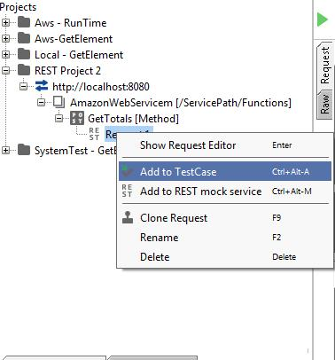
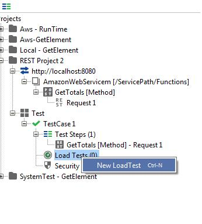
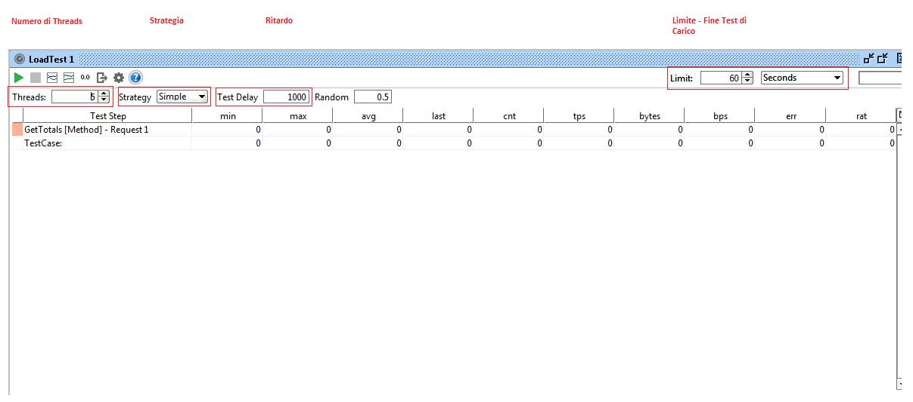

Installazione
SoapUI è un software per effettuare test di servizi esposti su http (web services). E’ scaricabile in versione free software (GNU Lesser Public License 2.1) e installabile in varie piattaforme (Win / Mac / Linux/Unix). Basta scaricare il file eseguibile al seguente link e seguire la procedura guidata di installazione
Creazione di un nuovo progetto Rest
Apriamo l'applicazione e clicchiamo sull'icona per creare un nuovo progetto Rest:
Nel box del nuovo progetto indichiamo La Url del servizio, che sarà utilizzata come Default per il nostra chiamata (in questo caso, abbiamo un servizio in ascolto in locale sulla porta 8080)

A questo punto viene prodotta una gerarchia di partenza. Cliccando con il tasto destro a ciascun livello, è possibile rinominare ogni singolo componente in modo che sia più significativo
Analizziamo ogni livello in dettaglio:
Questa sarà quindi la nostra schermata una volta terminato di rinominare i vari livelli della gerarchia:
Configurazione della Request
Passiamo a configurare la request. Ci troviamo di fronte la seguente schermata che ci permette di poter inserire i parametri per la nostra chiamata. E' possibile anche cambiare l'endpoint e il Path. Se abbiamo configurato correttamente tutti i valori nella gerarchia, una volta arrivati a questo punto dobbiamo solamente settare i parametri e far partire la chiamata.
Se la chimata va a buon fine, otteniamo il messaggio di risposta.
In caso negativo, è possibile consultare l'errore che riporta il server tramite la schermata XML. SoapUI mette inoltre a disposizione vari log (http, error log, memory log, etc..) per poter fare il Debug della chiamata Rest.
Configurazione del test di carico
Il cosiddetto test di carico (Load Test) in soapUI è in realtà un test di prestazione. Per configurare un Test di carico in SoapUI per prima cosa aggiungiamo un TestCase alla request
Una volta creato, con il tasto destro selezioniamo un nuovo load Test
A questo punto abbiamo creato il test di caricamento. La schermata permette varie configurazioni e permette di leggere in tempo reale l'andamento del test.
La toolbar superiore permette la configurazione del test tramite alcuni parametri:
- Burst Esecuzione in "bursts"
- Simple Esecuzione con un ritardo configurabile
- Variance Esecizione con numero variabile di threads
- Thread Esecuzione con numero prefissato di Threads